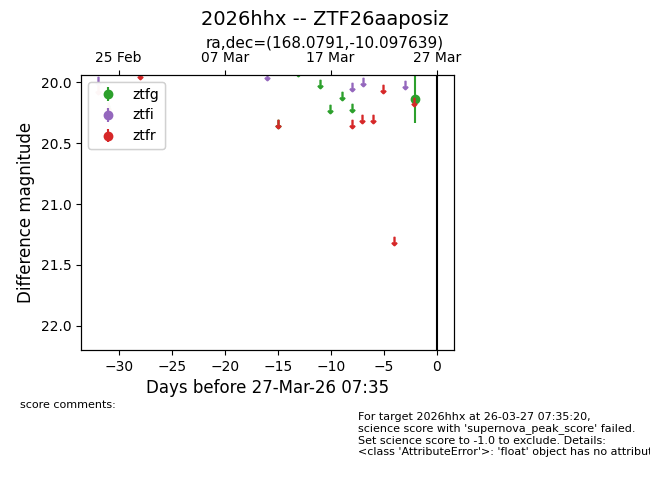
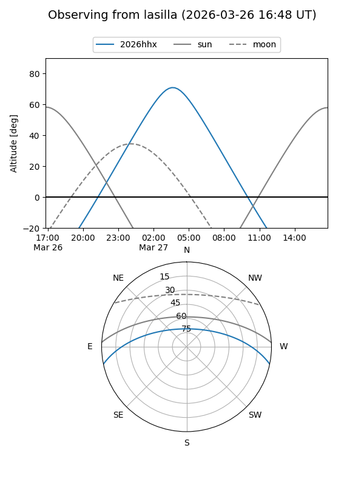
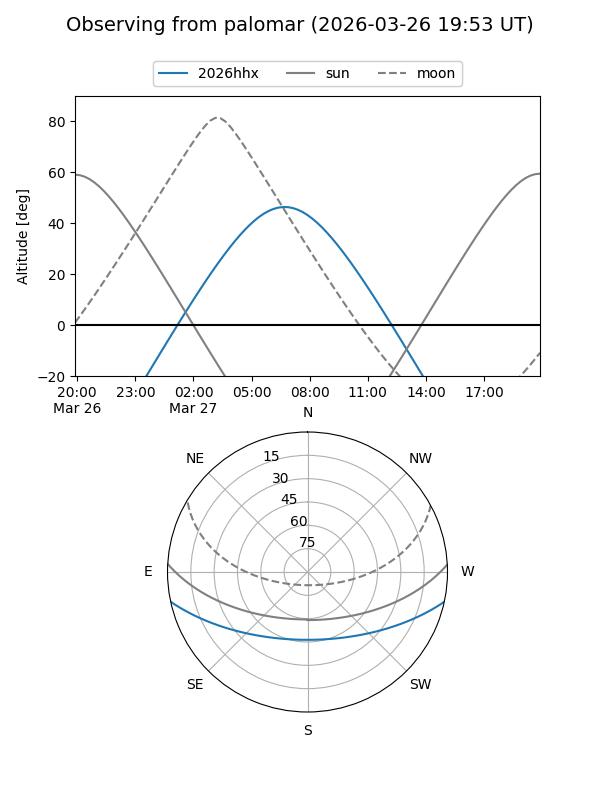

2026hhx
Target 2026hhx at 2026-03-27 07:37
Aliases and brokers:
FINK: link
Lasair: link
ALeRCE: link
TNS: link
YSE: link
alt names
ZTF26aaposiz (ztf,fink_ztf)
2026hhx (tns,yse)
Coordinates:
equatorial (ra, dec) = 168.0791,-10.09764
equatorial (HMS+DMS) = 11:12:18.99,-10:05:51.50
galactic (l, b) = (266.7227,+45.69050)
Flags:
Photometry:
last ztfg=20.14
1 ztfg detections
Lightcurve

Visibility


Additional plots